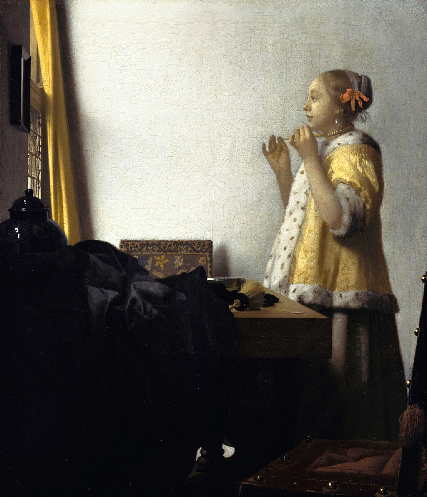

<head>
<meta charset="UTF-8" />
<meta name="keywords" content="drawing, painting" />
<meta name="description" content="drawings by Sunjy" />
<title>Sunjy</title>
<link rel="shortcut icon" type="image/x-icon" href="../../mImages/mCommon/favicon.ico" media="screen" />
<link rel="stylesheet" type="text/css" href="../../mCsses/mCommon/mCssA.css" />
<link rel="stylesheet" type="text/css" href="../../mCsses/mCommon/mCssB.css" />
<link rel="stylesheet" type="text/css" href="../../mCsses/mCommon/mCssC.css" />
<link rel="stylesheet" type="text/css" href="../../mCsses/mCommon/mCssD.css" />
<link rel="stylesheet" type="text/css" href="../../mCsses/mContent/mCssA.css" />
<link rel="stylesheet" type="text/css" href="../../mCsses/mContent/mCssB.css" />
<link rel="stylesheet" type="text/css" href="../../mCsses/mContent/mCssC.css" />
<link rel="stylesheet" type="text/css" href="../../mCsses/mContent/mCssD.css" />
</head>
<script type="text/javascript" src="../../mScripts/mContent/mContentAA.js" /></script>
<script type="text/javascript" src="../../mScripts/mContent/mContentAB.js" /></script>
<script type="text/javascript" src="../../mScripts/mContent/mContentAC.js" /></script>
<script type="text/javascript" src="../../mScripts/mContent/mContentAD.js" /></script>
<script type="text/javascript"></script> 
<script type="text/javascript">
document.write('<div class="mImgAbsolute"></div>');
/*
document.write('<p class="mFontSizeBColor" />From a white paper...</p>');
document.write('<table class="center"><tr><td>');
document.write('');
document.write('</td></tr></table>');
*/
</script>


<script type="text/javascript">
document.write('<p class="mFontSizeBColor" />Woman with a Pearl Necklace</p>');
document.write('<p class="mFontSizeSColor" />“Woman with a Pearl Necklace” by Johannes Vermeer portrays a young Dutch woman, dressing with yellow ribbons, pearl earrings, and a pearl necklace. Vermeer depicted many women in similar circumstances in interior domestic scenes.<br><br>The same woman also appears in The Love Letter and A Lady Writing a Letter.<br><br>The young woman is looking at the framed mirror and is dressed in a yellow, fur-trimmed coat. Vermeer used yellow for the draped curtain and a rich tone of lemon yellow for the woman’s jacket, creating a balance between the two ends of his painting. <br><br>A significant part of the picture is the blank white wall, which allows Vermeer to set a stage for the young woman. With no distraction on the wall behind her, the viewer can focus on the central figure’s expression and actions.<br><br>The thick blue tablecloth draped over the left side of the painting brings a sharp contrast to the work.<br><br>Johannes Vermeer is one of the Netherlands’ most prominent Dutch painters. He painted relatively few paintings, most of which had common attributes such as the use of yellow and blue tones, the depiction of women, and the depiction of domestic settings. <br><br>Vermeer offered glimpses into the lives of Holland’s cultured citizens. Although little is known about Vermeer’s life, historians do know of his baptism and experience in Delft, where he was raised by a craftsman father and married a Catholic girl by the name of Catherina Bolnes.<br></p>');
document.write('<table class="center" /><tr><td>');
document.write('<br>The same woman also appears in The Love Letter and A Lady Writing a Letter.<br><br>The young woman is looking at the framed mirror and is dressed in a yellow, fur-trimmed coat. Vermeer used yellow for the draped curtain and a rich tone of lemon yellow for the woman’s jacket, creating a balance between the two ends of his painting. <br><br>A significant part of the picture is the blank white wall, which allows Vermeer to set a stage for the young woman. With no distraction on the wall behind her, the viewer can focus on the central figure’s expression and actions.<br><br>The thick blue tablecloth draped over the left side of the painting brings a sharp contrast to the work.<br><br>Johannes Vermeer is one of the Netherlands’ most prominent Dutch painters. He painted relatively few paintings, most of which had common attributes such as the use of yellow and blue tones, the depiction of women, and the depiction of domestic settings. <br><br>Vermeer offered glimpses into the lives of Holland’s cultured citizens. Although little is known about Vermeer’s life, historians do know of his baptism and experience in Delft, where he was raised by a craftsman father and married a Catholic girl by the name of Catherina Bolnes.<br>" />');
document.write('</td></tr></table>');
</script>


